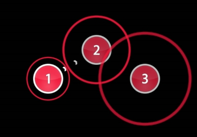
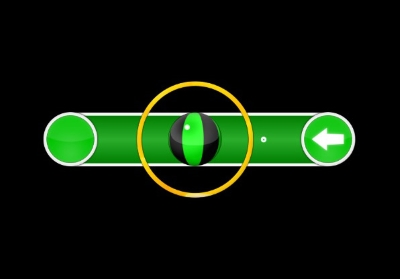

osu!
Hit-Circles und Sliders
Hit-Circles
Manchmal auch Noten genannt sind Hit-Circles das häufigste Rhythmuselement in Beatmaps.
Mit dem Auftauchen eines Hit-Circles erscheint gleichzeitig der sogenannte Approach-Circle (engl. Annäherungskreis).
Dieser zeigt an, wann ein Hit-Circle geklickt werden sollte, indem er solange kleiner wird, bis er in den Hit-Circle übergeht.
In diesem Moment muss der Spieler den Cursor auf dem Hit-Circle platziert haben und ihn mit einer Maus- oder Tastaturtaste oder durch eine Berührung des Grafiktabletts mit dem Eingabestift anklicken. Diese Tasten werden auch Hit-Buttons (engl. Hit Button) genannt.

Drei Hitcircle mit Approach-Circle
Slider
Slider ähneln einen Schieberegler.
Zu allererst drückt und hält man an dem anfang eines Sliders.
Danach folgt man den Sliderball bis zum ende eines Sliders
Manchmal ist noch ein Reverse-Arrow dabei.
Dann muss man den Sliderball bis zum Anfang zurück begleiten.

Ein Slider mit Reverse-Arrow
Offizielle osu! Website: osu.ppy.sh